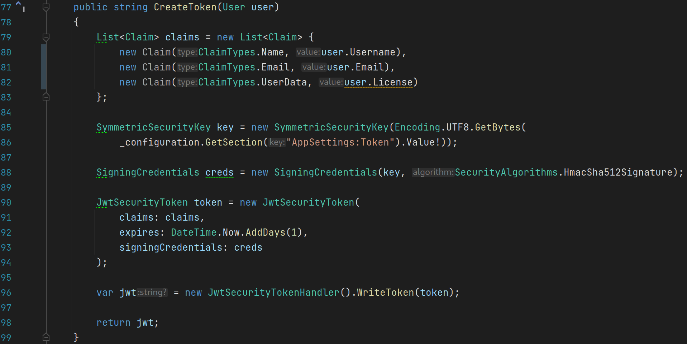
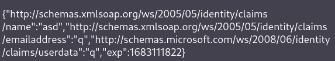

En JWT kan bruges til at validere log ind og registrering af brugere på en service/hjemmeside. Det er en token som består af 3 dele, sepereret af ".". Den første del (header) indeholder information omkring hvilken type af token det er, og hvilken algoritme bliver brugt til at hashe den tredje del af token. Den anden del (payload) er typisk data omkring den bruger, som f.eks skal logge ind. Payloaden består af claims. Der er typisk 3 typer af claims. Registerede claims. Det er et set af claims, som ikke er nødvændie, men er god etik at bruge. Det kan f.eks være iss (issuer), exp (expiration time) og sub (subject).
Public claim. Det kan være hvad end man selv bestemmer, så længe at det ikke har samme navn som JWT default navne. Private claim. Det er claims som bruges til at dele information mellem dem, som bruger JWT. Både den første og anden del af token er base64 enkodet. Den tredje del er en signatur, som er et hash af del 1 + del 2 og en hæmmelig kode/nøgle.
Tid til at lave en JWT. Som set på billedet under, så har vi en metode, der laver en JWT token (jeg ved godt at T'et i JWT står for token, men det lyder lidt bedre med JWT token, end JW Token). På linje 79 laver vi en liste af claims, som består af brugerens brugernavn, email og license. På linje 85 laver vi en nøgle, ud fra en anden nøgle, vi selv har lavet. På linje 88 laver vi credentials, som er blevet signeret med den nøgle, vi lavede tidligere. På linje 90 laver vi selve den JWT token, som vi sender til klienten, der spørge efter den.
I denne token bruger vi de claims, vi har lavet tidligere, vi setter en exp claim, og vi signere den med de credentials, vi lavede tidligere. Og på linje 96 samler vi alle delene og skriver det til en JWT token, hvor vi derefter returnere den, til hvad end spørge efter den.

På billedet under, kan vi se hvordan den token bliver håndteret på klientens side. Som det står til lige nu, så skal koden genskrives snart.
Men set på linje 18 laver vi en variable, der består af payloaden fra vores JWT token. Da den er base64 enkodet, dekoder vi den med
atob, som tager en base64 enkodet string. Vi splitter stringen efter ".", og tager den midterste del af JWT token (payload),
og dekoder den.
Dataen fra den dekodet string, vil se nogenlunde sådan ud på billedet under. Vi kan se at den data indeholder brugerens navn, email adresse og brugerdata (i dette tilfælde er brugerdata en license).
